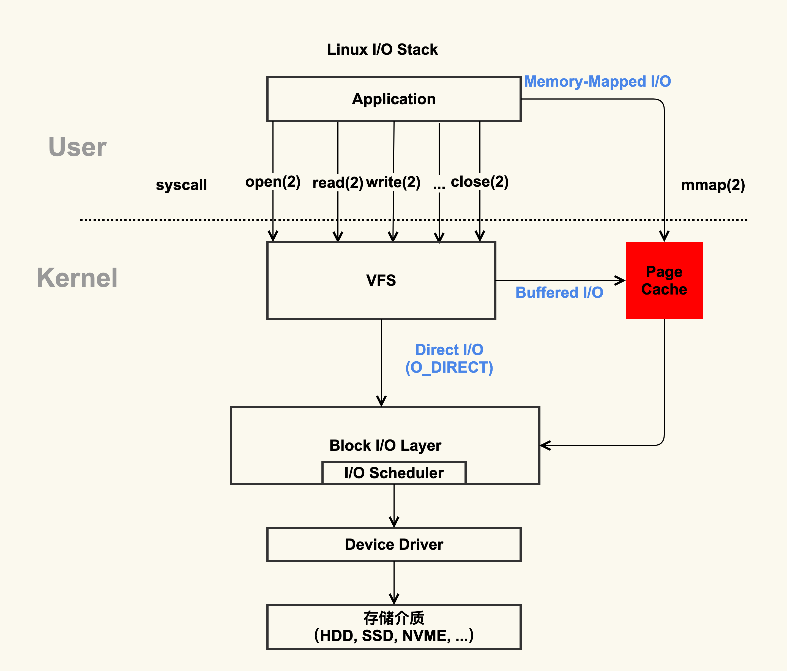
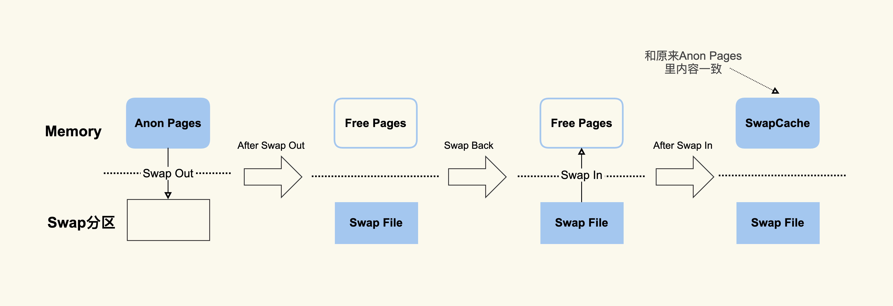

- 00 开篇词 如何让Linux内核更好地服务应用程序？.md.html
- 01 基础篇 如何用数据观测Page Cache？.md.html
- 02 基础篇 Page Cache是怎样产生和释放的？.md.html
- 03 案例篇 如何处理Page Cache难以回收产生的load飙高问题？.md.html
- 04 案例篇 如何处理Page Cache容易回收引起的业务性能问题？.md.html
- 05 分析篇 如何判断问题是否由Page Cache产生的？.md.html
- 06 基础篇 进程的哪些内存类型容易引起内存泄漏？.md.html
- 07 案例篇 如何预防内存泄漏导致的系统假死？.md.html
- 08 案例篇 Shmem：进程没有消耗内存，内存哪去了？.md.html
- 09 分析篇 如何对内核内存泄漏做些基础的分析？.md.html
- 10 分析篇 内存泄漏时，我们该如何一步步找到根因？.md.html
- 11 基础篇 TCP连接的建立和断开受哪些系统配置影响？.md.html
- 12 基础篇 TCP收发包过程会受哪些配置项影响？.md.html
- 13 案例篇 TCP拥塞控制是如何导致业务性能抖动的？.md.html
- 14 案例篇 TCP端到端时延变大，怎样判断是哪里出现了问题？.md.html
- 15 分析篇 如何高效地分析TCP重传问题？.md.html
- 16 套路篇 如何分析常见的TCP问题？.md.html
- 17 基础篇 CPU是如何执行任务的？.md.html
- 18 案例篇 业务是否需要使用透明大页：水可载舟，亦可覆舟？.md.html
- 19 案例篇 网络吞吐高的业务是否需要开启网卡特性呢？.md.html
- 20 分析篇 如何分析CPU利用率飙高问题 ？.md.html
- 加餐 我是如何使用tracepoint来分析内核Bug的？.md.html
- 结束语 第一次看内核代码，我也很懵逼.md.html
- 捐赠
01 基础篇 如何用数据观测Page Cache？
你好，我是邵亚方。今天我想和你聊一聊Page Cache的话题。
Page Cache你应该不陌生了，如果你是一名应用开发者或者Linux运维人员，那么在工作中，你可能遇见过与Page Cache有关的场景，比如：
- 服务器的load飙高；
- 服务器的I/O吞吐飙高；
- 业务响应时延出现大的毛刺；
- 业务平均访问时延明显增加。
这些问题，很可能是由于Page Cache管理不到位引起的，因为Page Cache管理不当除了会增加系统I/O吞吐外，还会引起业务性能抖动，我在生产环境上处理过很多这类问题。
据我观察，这类问题出现后，业务开发人员以及运维人员往往会束手无策，究其原因在于他们对Page Cache的理解仅仅停留在概念上，并不清楚Page Cache如何和应用、系统关联起来，对它引发的问题自然会束手无策了。所以，要想不再踩Page Cache的坑，你必须对它有个清晰的认识。
那么在我看来，认识Page Cache最简单的方式，就是用数据说话，通过具体的数据你会更加深入地理解Page Cache的本质。为了帮你消化和理解，我会用两节课的时间，用数据剖析什么是Page Cache，为什么需要Page Cache，Page Cache的产生和回收是什么样的。这样一来，你会从本质到表象，透彻理解它，深切感受它和你的应用程序之间的关系，从而能更好地理解上面提到的四个问题。
不过，在这里我想给你提个醒，要学习今天的内容，你最好具备一些Linux编程的基础，比如，如何打开一个文件；如何读写一个文件；如何关闭一个文件等等。这样，你理解今天的内容会更加容易，当然了，不具备也没有关系，如果遇到你实在看不懂的地方，你可以查阅《UNIX环境高级编程》这本书，它是每一位Linux开发者以及运维人员必看的入门书籍。
好了，话不多说，我们进入今天的学习。
什么是Page Cache？
我记得很多应用开发者或者运维在向我寻求帮助，解决Page Cache引起的问题时，总是喜欢问我Page Cache到底是属于内核还是属于用户？针对这样的问题，我一般会让他们先看下面这张图：

通过这张图片你可以清楚地看到，红色的地方就是Page Cache，很明显，Page Cache是内核管理的内存，也就是说，它属于内核不属于用户。
那咱们怎么来观察Page Cache呢？其实，在Linux上直接查看Page Cache的方式有很多，包括/proc/meminfo、free 、/proc/vmstat命令等，它们的内容其实是一致的。
我们拿/proc/meminfo命令举例看一下（如果你想了解/proc/meminfo中每一项具体含义的话，可以去看Kernel Documentation的meminfo这一节，它详细解释了每一项的具体含义，Kernel Documentation是应用开发者想要了解内核最简单、直接的方式）。
$ cat /proc/meminfo
...
Buffers: 1224 kB
Cached: 111472 kB
SwapCached: 36364 kB
Active: 6224232 kB
Inactive: 979432 kB
Active(anon): 6173036 kB
Inactive(anon): 927932 kB
Active(file): 51196 kB
Inactive(file): 51500 kB
...
Shmem: 10000 kB
...
SReclaimable: 43532 kB
...
根据上面的数据，你可以简单得出这样的公式（等式两边之和都是112696 KB）：
Buffers + Cached + SwapCached = Active(file) + Inactive(file) + Shmem + SwapCached
那么等式两边的内容就是我们平时说的Page Cache。请注意你没有看错，两边都有SwapCached，之所以要把它放在等式里，就是说它也是Page Cache的一部分。
接下来，我带你分析一下这些项的具体含义。等式右边这些项把Buffers和Cached做了一下细分，分为了Active(file)，Inactive(file) 和Shmem，因为Buffers更加依赖于内核实现，在不同内核版本中它的含义可能有些不一致，而等式右边和应用程序的关系更加直接，所以我们从等式右边来分析。
在Page Cache中，Active(file)+Inactive(file)是File-backed page（与文件对应的内存页），是你最需要关注的部分。因为你平时用的mmap()内存映射方式和buffered I/O来消耗的内存就属于这部分，最重要的是，这部分在真实的生产环境上也最容易产生问题，我们在接下来的课程案例篇会重点分析它。
而SwapCached是在打开了Swap分区后，把Inactive(anon)+Active(anon)这两项里的匿名页给交换到磁盘（swap out），然后再读入到内存（swap in）后分配的内存。由于读入到内存后原来的Swap File还在，所以SwapCached也可以认为是File-backed page，即属于Page Cache。这样做的目的也是为了减少I/O。你是不是觉得这个过程有些复杂？我们用一张图直观地看一下：

我希望你能通过这个简单的示意图明白SwapCached是怎么产生的。在这个过程中你要注意，SwapCached只在Swap分区打开的情况下才会有，而我建议你在生产环境中关闭Swap分区，因为Swap过程产生的I/O会很容易引起性能抖动。
除了SwapCached，Page Cache中的Shmem是指匿名共享映射这种方式分配的内存（free命令中shared这一项），比如tmpfs（临时文件系统），这部分在真实的生产环境中产生的问题比较少，不是我们今天的重点内容，我们这节课不对它做过多关注，你知道有这回事就可以了。
当然了，很多同学也喜欢用free命令来查看系统中有多少Page Cache，会根据buff/cache来判断存在多少Page Cache。如果你对free命令有所了解的话，肯定知道free命令也是通过解析/proc/meminfo得出这些统计数据的，这些都可以通过free工具的源码来找到。free命令的源码是开源，你可以去看下procfs里的free.c文件，源码是最直接的理解方式，它会加深你对free命令的理解。
不过你是否好奇过，free命令中的buff/cache究竟是指什么呢？我们在这里先简单地看一下：
$ free -k
total used free shared buff/cache available
Mem: 7926580 7277960 492392 10000 156228 430680
Swap: 8224764 380748 7844016
通过procfs源码里面的proc/sysinfo.c这个文件，你可以发现buff/cache包括下面这几项：
buff/cache = Buffers + Cached + SReclaimable
通过前面的数据我们也可以验证这个公式: 1224 + 111472 + 43532的和是156228。
另外，这里你要注意，你在做比较的过程中，一定要考虑到这些数据是动态变化的，而且执行命令本身也会带来内存开销，所以这个等式未必会严格相等，不过你不必怀疑它的正确性。
从这个公式中，你能看到free命令中的buff/cache是由Buffers、Cached和SReclaimable这三项组成的，它强调的是内存的可回收性，也就是说，可以被回收的内存会统计在这一项。
其中SReclaimable是指可以被回收的内核内存，包括dentry和inode等。而这部分内容是内核非常细节性的东西，对于应用开发者和运维人员理解起来相对有些难度，所以我们在这里不多说。
掌握了Page Cache具体由哪些部分构成之后，在它引发一些问题时，你就能够知道需要去观察什么。比如说，应用本身消耗内存（RSS）不多的情况下，整个系统的内存使用率还是很高，那不妨去排查下是不是Shmem(共享内存)消耗了太多内存导致的。
讲到这儿，我想你应该对Page Cache有了一些直观的认识了吧？当然了，有的人可能会说，内核的Page Cache这么复杂，我不要不可以么？
我相信有这样想法的人不在少数，如果不用内核管理的Page Cache，那有两种思路来进行处理：
- 第一种，应用程序维护自己的Cache做更加细粒度的控制，比如MySQL就是这样做的，你可以参考MySQL Buffer Pool ，它的实现复杂度还是很高的。对于大多数应用而言，实现自己的Cache成本还是挺高的，不如内核的Page Cache来得简单高效。
- 第二种，直接使用Direct I/O来绕过Page Cache，不使用Cache了，省的去管它了。这种方法可行么？那我们继续用数据说话，看看这种做法的问题在哪儿？
为什么需要Page Cache？
通过第一张图你其实已经可以直观地看到，标准I/O和内存映射会先把数据写入到Page Cache，这样做会通过减少I/O次数来提升读写效率。我们看一个具体的例子。首先，我们来生成一个1G大小的新文件，然后把Page Cache清空，确保文件内容不在内存中，以此来比较第一次读文件和第二次读文件耗时的差异。具体的流程如下。
先生成一个1G的文件：
\( dd if=/dev/zero of=/home/yafang/test/dd.out bs=4096 count=\)((1024*256))
其次，清空Page Cache，需要先执行一下sync来将脏页（第二节课，我会解释一下什么是脏页）同步到磁盘再去drop cache。
$ sync && echo 3 > /proc/sys/vm/drop_caches
第一次读取文件的耗时如下：
$ time cat /home/yafang/test/dd.out &> /dev/null
real 0m5.733s
user 0m0.003s
sys 0m0.213s
再次读取文件的耗时如下：
$ time cat /home/yafang/test/dd.out &> /dev/null
real 0m0.132s
user 0m0.001s
sys 0m0.130s
通过这样详细的过程你可以看到，第二次读取文件的耗时远小于第一次的耗时，这是因为第一次是从磁盘来读取的内容，磁盘I/O是比较耗时的，而第二次读取的时候由于文件内容已经在第一次读取时被读到内存了，所以是直接从内存读取的数据，内存相比磁盘速度是快很多的。这就是Page Cache存在的意义：减少I/O，提升应用的I/O速度。
所以，如果你不想为了很细致地管理内存而增加应用程序的复杂度，那你还是乖乖使用内核管理的Page Cache吧，它是ROI(投入产出比)相对较高的一个方案。
你要知道，我们在做方案抉择时找到一个各方面都很完美的方案还是比较难的，大多数情况下都是经过权衡后来选择一个合适的方案。因为，我一直坚信，合适的就是最好的。
而我之所以说Page Cache是合适的，而不是说它是最好的，那是因为Page Cache的不足之处也是有的，这个不足之处主要体现在，它对应用程序太过于透明，以至于应用程序很难有好方法来控制它。
为什么这么说呢？要想知道这个答案，你就需要了解Page Cache的产生过程，这里卖个关子，我在下一讲会跟你讨论。
课堂总结
我们这节课主要是讲述了如何很好地理解Page Cache，在我看来，要想很好的理解它，直观的方式就是从数据入手，所以，我从如何观测Page Cache出发来带你认识什么是Page Cache；然后再从它为什么容易产生问题出发，带你回顾了它存在的意义，我希望通过这样的方式，帮你明确这样几个要点：
- Page Cache是属于内核的，不属于用户。
- Page Cache对应用提升I/O效率而言是一个投入产出比较高的方案，所以它的存在还是有必要的。
在我看来，如何管理好Page Cache，最主要的是你要知道如何来观测它以及观测关于它的一些行为，有了这些数据做支撑，你才能够把它和你的业务更好地结合起来。而且，在我看来，当你对某一个概念很模糊、搞不清楚它到底是什么时，最好的认知方式就是先搞明白如何来观测它，然后动手去观测看看它究竟是如何变化的，正所谓纸上得来终觉浅，绝知此事要躬行！
这节课就讲到这里，下一节我们使用数据来观察Page Cache的产生和释放，这样一来，你就能了解Page Cache的整个生命周期，从而对于它引发的一些问题能有一个大概的判断。
课后作业
最后我给你留一道思考题，请你写一个程序来构造出来Page Cache，然后观察/proc/meminfo和/proc/vmstat里面的数据是如何变化的， 欢迎在留言区分享你的看法。
感谢你的阅读，如果你认为这节课的内容有收获，也欢迎把它分享给你的朋友，我们下一讲见。
© 2019 - 2023 Liangliang Lee. Powered by gin and hexo-theme-book.